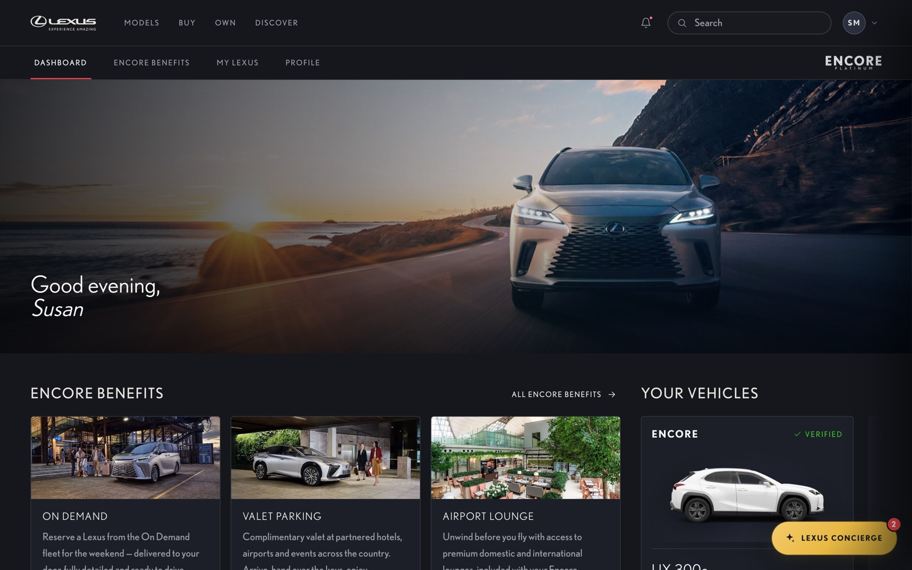
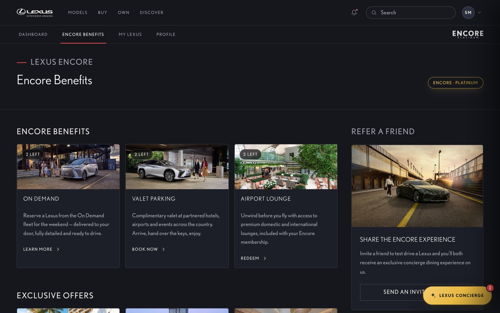
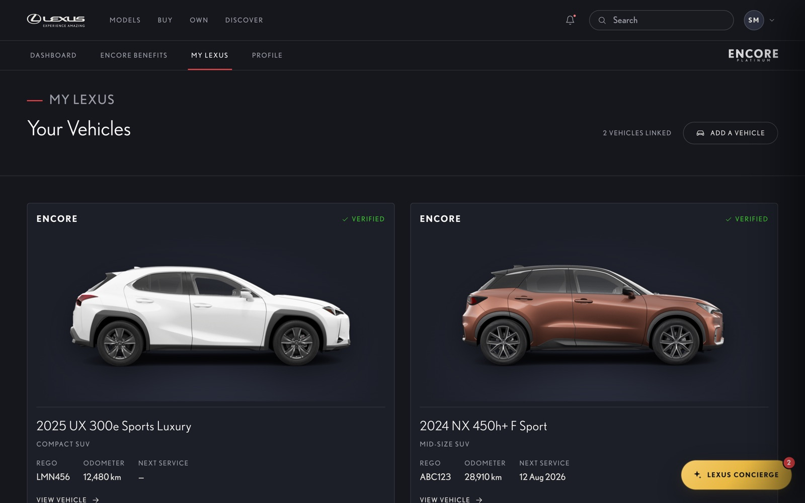
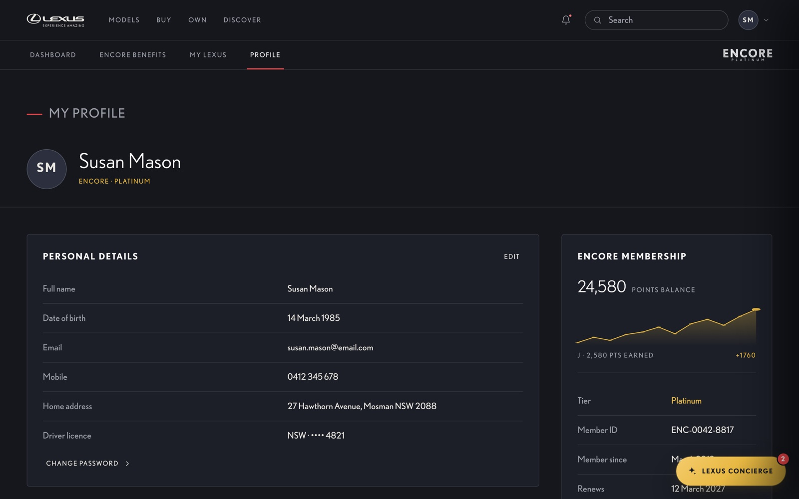
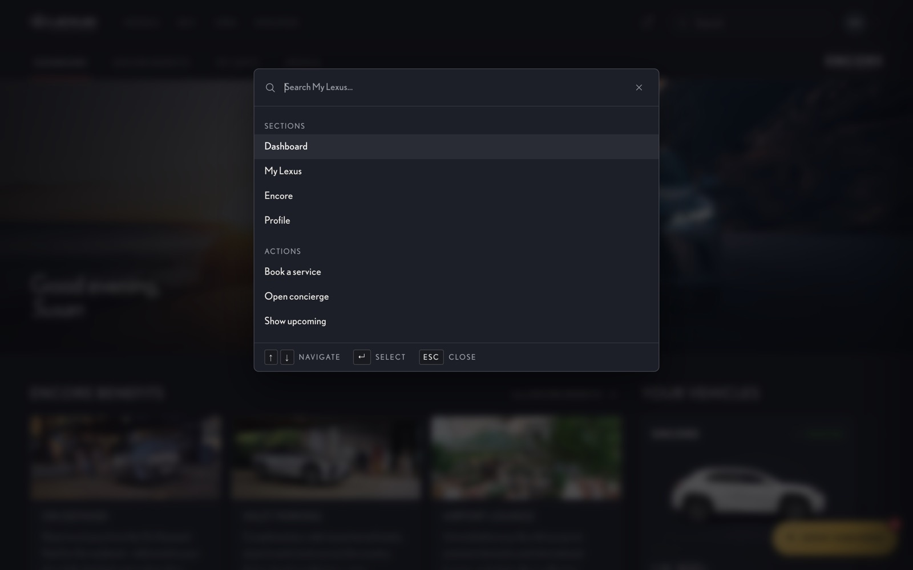
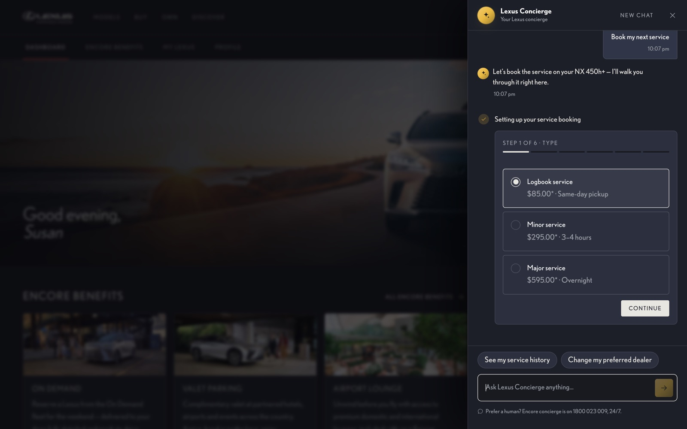

Magnetic buttons
Affordances lean toward the cursor, then settle on the emphasized curve.
Lexus AustraliaMy LexusMember experience
A hi-fidelity prototype of the signed-in member experience — built to show craft in motion, dynamic interaction, an interactive component library and a token-driven design system running end to end.
The brief
Reimagine everything that happens after login — the Encore dashboard, the vehicle garage, benefits, profile and the concierge — as one fluid, premium product where every screen feels engineered, not decorated.
01 — Design System
Brand primitive → semantic token → component, all resolving through the same Lexus AU export — documented in a 131-story Storybook. Tap any swatch to copy it.
Experience Amazing
Good evening, Susan
Encore Benefits
Calm, precise, confident — Nobel set with generous tracking on headings and an even, readable body rhythm.
LABEL · TRACKED CAPS
Live curves on the four named eases. Hover a card to replay.
02 — UI Design
Page previews are recorded walkthroughs; tap a thumbnail to open any screen full-bleed. Real captures from the live build.






03 — Animation & Micro-interactions
Scroll reveals, magnetic affordances, ripple feedback and counters — all on the token-defined
easing curves, all silenced under prefers-reduced-motion.
Affordances lean toward the cursor, then settle on the emphasized curve.
Pointer-anchored ripple confirms every tap at 140ms.
A spring-eased switch — the kind used across settings flyouts.
04 — Dynamic Pop-ups & Component Interactions
These aren't videos — each panel is the real component, embedded live from Storybook. Open the flyout, type in a field, drag the carousel, fire the command palette.
05 — Mobile Navigation & Gestures
Drag the carousel (it's interactive). The phone frames are recorded walkthroughs of the off-canvas drawer and scroll choreography — touch, drag and momentum, native-feeling.
A pointer/touch carousel with drag, momentum and snap — the gesture pattern behind the offers rail.
↔ Drag, or use arrow keys
06 — Accessibility
Accessibility was a constraint from the first token, not an audit at the end. Every story
runs axe via Storybook's a11y addon — and this case study holds the same bar.
Secondary text was lifted from #6e727e to #9499a1 so it clears
4.5:1 on raised surfaces. Foreground, accents and states are all AA-checked against the dark canvas.
Every reveal, parallax, autoplay video and section transition stands down under
prefers-reduced-motion — in the product and on this page.
⌘K command palette with arrow/enter/esc, focus-trapped flyouts that return focus on close, visible focus rings, and a skip link.
Native landmarks, role="dialog", switch, tablist,
aria-current nav and aria-live toasts — announced correctly to screen readers.
Touch targets meet the 44px minimum, with generous spacing on the mobile drawer and carousels for thumb reach.
axe-core on every Storybook story catches regressions; manual screen-reader and keyboard passes catch what automation can't.
07 — Try it yourself
Not a video — the deployed prototype, live in the page. Toggle the viewport.
In closing
Token discipline, motion that means something, interactions that finish the job in place, and accessibility built in from the start — the difference between a screen that looks designed and a product that feels designed.